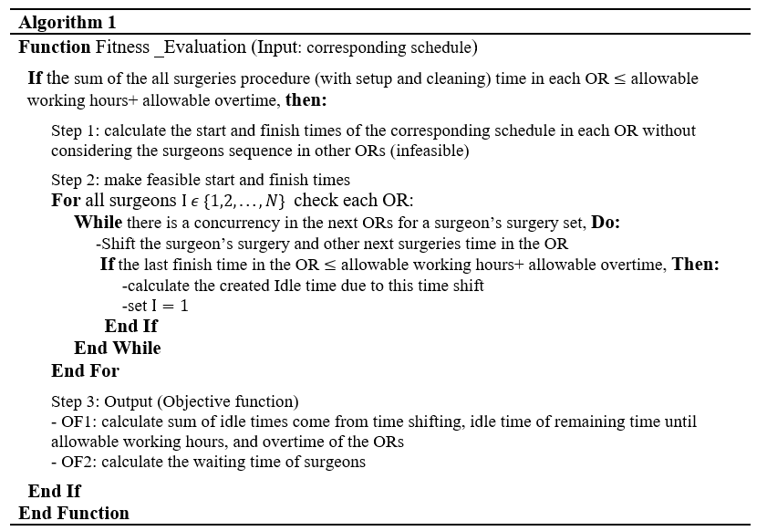
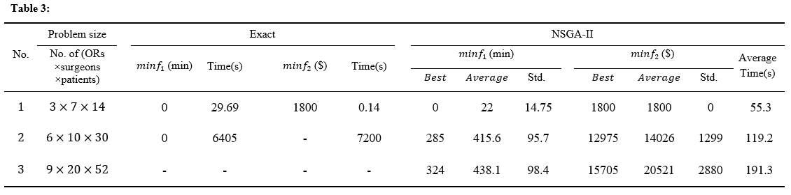
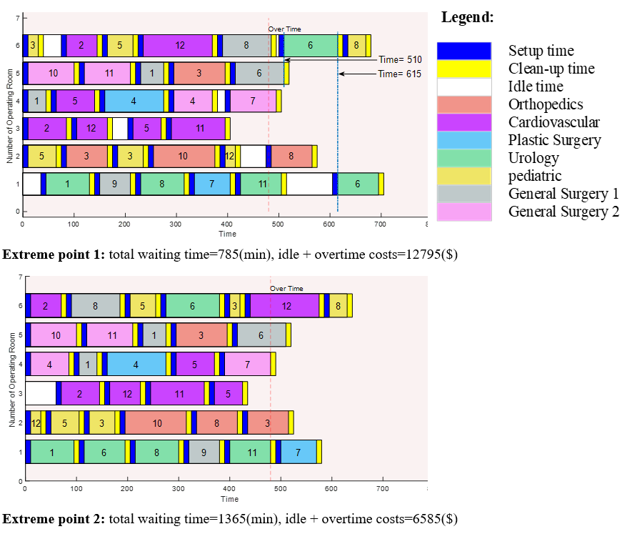

Abstract
The operating rooms represent a critical bottleneck in most hospitals and have very high fixed costs. Determining the sequence of surgeries in operating rooms is a challenging short-term operational decision-making problem. With this in mind, operating rooms and surgeons as the most expensive resources in operation, the objective of this study is assigning the operations to different operating rooms to minimize operating room’s overhead costs and the surgeon’s waiting time. Considering advanced access policy, a mixed linear integer programming model is developed for effective scheduling of patients, which determines daily appointment scheduling of waiting list operations. In addition, analytical insights into the prediction of the operation’s duration, which affects the performance of appointment systems, are presented to take account of its uncertainty. We calculate how many it can reduce the objectives by implementing the proposed model both on simulated data and a real case study to verify and show its performance. The field experiment shows an average surgeon’s waiting time reduction of ~36%, and at the same time, operating room costs reduction of ~52% in the selected days.
Keywords: Operating room; Mixed integer programming; Multi-objective optimization; Appointment scheduling
Co-authors: -Dr. Hamidreza
Eskandari* ,
Mehran
Moazeni
- fig. 1 requesting a surgery

-Generating feasible solutions efficiently:
The main challenge in the fitness evaluation of NSGA-II is the concurrency of surgeon's surgery in the different rooms. It is impossible to shift only a surgeon's operating time to prevent this problem because other surgeons operating times and their idle times are changed and the final result of fitness evaluation would not be correct !!! this was a big challenge for us.
Dealing with this difficulty, the Following algorithm is developed.

-Results of NSGA-II and exact method for generated test problems:

-surgery schedules for extreme point 1 & 2:
Extreme point 1: total waiting time=785(min), idle + overtime costs=12795($)
Extreme point 2: total waiting time=1365(min), idle + overtime costs=6585($)

-Corresponding figure of the above Extreme points :
The "Min-Max" method (Belegundu and Chandrupatla, 2019) was used to obtain the best compromise point in the initial solution front and optimal front to calculate the improvement in the response that this algorithm produces.

- A special MATLAB code is developed for drawing the Gantt chart of surgery schedules for extreme points and their corresponding figures.
Generating the Gantt chart of surgery schedule's solution at the end of the NSGA-II is not simple.
the complete code will be released after publishing the article